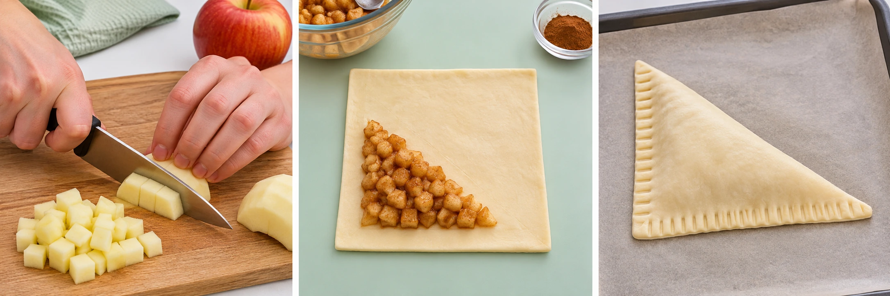
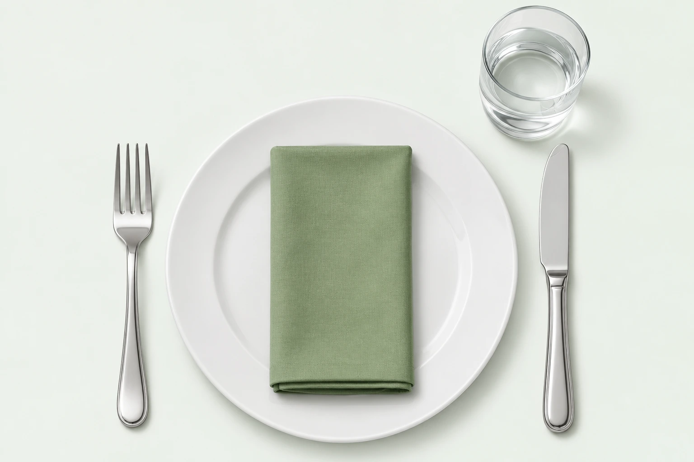
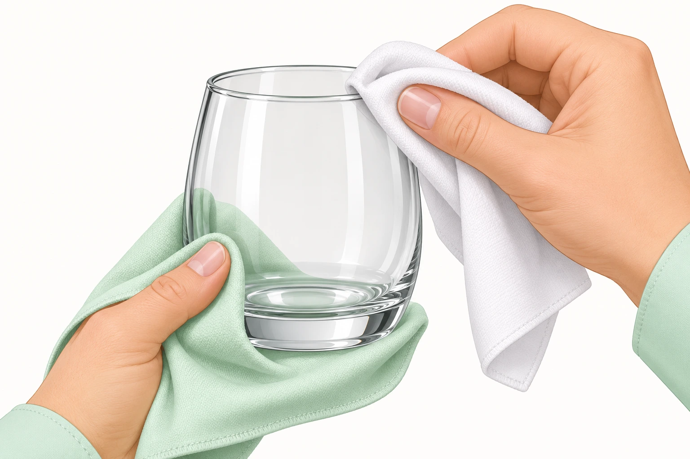

Vandaag: Gastheerschap
Eén praktische lespagina: koken, carrousel en boodschappen + KC Aquamarijn.
Vandaag organiseren, morgen aan de slag
- Start samen: rollen, planning en boodschappen controleren.
- Boodschappen & KC Aquamarijn: op het afgesproken moment; als ingrediënten nodig zijn voor het koken, eerst inkopen en terugbrengen.
- Koken: samen een appelflap maken, proeven en opruimen. Dit is geen carrouselstation.
- Carrousel: vier rondes langs indekken, poleren, borden dragen en gasten ontvangen.
- Afsluiten: bewijs opslaan, docentherinneringen en formulieren controleren en alles schoon achterlaten.
De docent bepaalt de volgorde, groepsindeling en tijden op basis van rooster en boodschappen. Hieronder staat alles wat je nodig hebt.
Boodschappen doen en materialen ophalen
Ga alleen op pad volgens de afspraken met de docent. Spreek af wie meegaat, welke route jullie nemen, hoeveel budget beschikbaar is en wanneer jullie terug zijn. Vaste vertrek- en terugkomsttijden worden door de docent ingevuld.
- Vóór vertrek: tel wie er morgen mee-eet. Gebruik de rekenbare boodschappenlijst bij het appelflaprecept. Voor de latere docentenlunch tel je leerlingen + vier docenten; dat is niet automatisch het aantal voor morgen.
- Voorraad controleren: kijk wat er al op school is. Koop alleen wat ontbreekt. Stem vegetarisch beleg, dieetwensen en allergenen met de docent af.
- Boodschappen doen: vergelijk prijs en verpakking, controleer houdbaarheid en houd gekoelde producten zo kort mogelijk buiten de koeling. Bewaar de kassabon.
- Langs KC Aquamarijn: haal de extra formulieren en de Kapla op. Vraag welke formulieren nodig zijn en controleer samen of alles compleet is.
- Herinnering voor de docent: inschrijvingen per onderdeel regelen met de opgehaalde formulieren. Leerlingen hoeven zich hier niet in te schrijven.
- Terug op school: zet gekoelde boodschappen direct goed weg, lever bon, formulieren en Kapla bij de docent in en meld eventuele ontbrekende spullen.
Meenemen: goedgekeurde boodschappenlijst, budget/betaalmiddel volgens docentafspraak, boodschappentassen en zo nodig een koeltas. Noteer wie verantwoordelijk is voor formulieren en Kapla.
Appelflappen bakken en mooi presenteren
Vandaag maak je zelf de appelvulling, vouw je een nette driehoek en bak je de flap goudbruin. Het doel: een gare, knapperige appelflap met een verzorgde presentatie.
Boodschappenlijst
Materialen
- Snijplank, geschikt mes en eventueel dunschiller.
- Kom, lepel, vork en eventueel keukenkwastje.
- Bakplaat, bakpapier en oven.
- Droge ovenhandschoenen, rooster en hittebestendige plek.
- Schone borden, schoonmaakmaterialen en camera voor je bewijs.
Werkverdeling: één leerling snijdt, één maakt het deeg klaar. Daarna maakt ieder zelf een flap. Werk samen bij oven, afwas en presentatie.
Zo maak je de appelflappen

- Was je handen en het werkblad. Bind haren vast, doe een schort aan en verdeel taken.
- Lees de bladerdeegverpakking. Verwarm de oven voor op de aangegeven temperatuur; vaak 200 °C hetelucht of 220 °C boven-/onderwarmte, maar de verpakking is leidend.
- Leg bakpapier op de bakplaat. Laat het bladerdeeg net genoeg ontdooien om te vouwen; werk koel en verwijder eventuele folie.
- Was de appel, schil naar keuze, verwijder het klokhuis en snijd met een veilige snijtechniek in kleine blokjes van ongeveer ½–1 cm.
- Meng per appelflap de halve appel met circa 4 g van de suiker, kaneel en eventueel rozijnen. Bewaar de rest van de suiker voor bovenop.
- Leg de vulling op één driehoekige helft van het deeg. Laat rondom ongeveer 1 cm vrij. Vul niet te veel: de flap moet goed dicht kunnen.
- Maak de randen licht vochtig met water. Vouw één hoek naar de tegenoverliggende hoek zodat een driehoek ontstaat. Druk de randen dicht met een vork.
- Maak met hulp van de docent een klein stoomgaatje bovenop. Bestrijk dun met water en strooi de resterende suiker erover.
- Leg met ruimte ertussen op de bakplaat. Bak volgens de verpakking, meestal 15–25 minuten, tot ook de onderkant gaar is en het deeg goudbruin is.
- Gebruik droge ovenhandschoenen en docentbegeleiding bij de hete bakplaat. Laat op een rooster afkoelen: de appelvulling kan erg heet zijn.
- Presenteer op een schoon bord met vrije bordrand. Voeg eventueel enkele verse appelpartjes toe uit de bestaande voorraad. Maak een scherpe foto vóór het proeven.
- Ruim hygiënisch op en lever je foto plus één verbeterpunt over vouwen, bakken of presentatie in.
Carrousel: gastvrij ontvangen en bedienen
Het koken is een apart deel. In deze carrousel oefen je tafel indekken, poleren, lopen met borden en een ontvangstgesprek. Verdeel de klas in vier groepen. Iedere groep bezoekt elk station; wissel de rollen zodat iedereen zelf oefent.
Voorstel: vier rondes van 15 minuten, met 3 minuten voor ieder van de drie wisselmomenten. De docent bevestigt de planning. Maak bij elk station een foto, fotoreeks of korte video als bewijs.
Na de carrousel: materialen schoon achterlaten en bewijs op de afgesproken schoollocatie zetten.
Tafel indekken
Doel: een schone, complete en gastvrije plek voor iedere eter.

- Maak de tafel schoon en controleer of stoelen en looproute veilig staan.
- Leg een bord recht voor de zitplaats; gebruik de schoolafspraak voor de afstand tot de tafelrand.
- Leg de vork links, het mes rechts met de snijkant naar het bord. Voeg alleen bestek toe dat bij het menu nodig is.
- Zet het glas rechtsboven het bord en leg een schoon servet volgens afspraak.
- Controleer ruimte, netheid en symmetrie. Raak eetvlakken en drinkranden niet aan.
- Laat je teamgenoot als gast plaatsnemen. Verwerk docentfeedback en dek opnieuw als dat nodig is.
Bewijs: foto van je complete tafelplek, liefst vóór én na feedback. Vertel in één zin wat je hebt verbeterd.
Glazen en bestek poleren
Doel: schone, streeploze materialen zonder vingerafdrukken. Poleren vervangt het afwassen niet.

- Controleer het schone glas en bestek op beschadigingen. Beschadigd glas niet gebruiken; laat het aan de docent zien.
- Neem een schone, droge en geschikte poleerdoek. Gebruik geen doek waarmee je de tafel hebt schoongemaakt.
- Houd het glas voorzichtig vast met de doek, zonder op de drinkrand te grijpen.
- Werk rustig langs het oppervlak. Draai bij een wijnglas de kelk en voet niet in tegengestelde richting; vermijd kracht.
- Poleer bestek met het handvat beschermd in de doek. Controleer tegen het licht en raak daarna de eetvlakken niet aan.
- Zet de materialen veilig en schoon weg. Gebruik hier geen kokend water; eventuele bevochtiging alleen volgens docentdemonstratie.
Bewijs: korte video of drie foto’s: controle vooraf, veilige handeling en streeploos eindresultaat.
Lopen met borden en rustig serveren
Doel: veilig oppakken, lopen en neerzetten. Snelheid is geen doel.
- Maak een korte oefenroute vrij van tassen, stoelen en andere obstakels.
- Pak één leeg, onbeschadigd bord zoals de docent voordoet. Houd vingers weg van het eetvlak en houd het bord stabiel.
- Sta rechtop, kijk vooruit en loop rustig. Houd afstand en kondig aan als je langs iemand moet.
- Stop bij de tafel en zet het bord rustig neer zonder over de gast heen te reiken. Volg de bedieningsafspraak van de docent.
- Oefen opnieuw na feedback. Pas daarna, met docentakkoord, een tweede leeg bord of een koud gevuld bord gebruiken.
- Oefen deze ronde niet met hete borden of hete dranken.
Bewijs: film kort het oppakken, lopen en neerzetten. Film bij voorkeur alleen handen, borden en de looproute; herkenbare personen alleen met toestemming.
Ontvangstgesprek in een restaurant
Doel: je ontvangt gasten vriendelijk en professioneel en begeleidt hen naar hun tafel. Oefen in tweetallen; wissel na ieder gesprek van rol. Een derde leerling kan observeren.
Stappen voor de gastheer/-vrouw
- Maak oogcontact, glimlach en begroet: “Goedemiddag, welkom in ons restaurant.”
- Vraag: “Heeft u gereserveerd?” Vraag bij een reservering op welke naam; gebruik in de oefening een verzonnen naam.
- Controleer voor hoeveel personen de tafel is. Zonder reservering: kijk eerst of er plaats is; beloof niet zomaar een tafel.
- Bied hulp met de jas aan als dat bij het restaurant past. Vraag vóór je iets aanneemt.
- Zeg: “Wilt u met mij meelopen?” Loop rustig voor en wijs de tafel aan.
- Bied de menukaart aan en vraag bijvoorbeeld of de gasten alvast water willen. Bij een allergie: meld dit aan de docent/keuken; beloof nooit zonder controle dat iets veilig is.
- Sluit af: “Neemt u rustig de tijd. Mijn collega komt zo bij u voor de bestelling.”
Voorbeeldgesprek
Medewerker: Goedemiddag, welkom! Heeft u gereserveerd?
Gast: Ja, op naam van De Vries.
Medewerker: Dank u. Dat is een tafel voor twee personen, klopt dat?
Gast: Ja, dat klopt.
Medewerker: Fijn, wilt u met mij meelopen? Dit is uw tafel. Hier is de menukaart. Wilt u alvast water?
Gast: Graag.
Medewerker: Natuurlijk. Neemt u rustig de tijd; mijn collega komt zo bij u.
Speel drie situaties
- Twee gasten met een reservering.
- Gasten zonder reservering: eerst beschikbaarheid controleren.
- Een gast heeft een dieetwens of allergie: goed luisteren en navragen bij docent/keuken.
Bewijs & feedback: neem met toestemming een kort rollenspel op, of laat een klasgenoot observeren en noteer feedback. Let op begroeting, beleefd taalgebruik, luisteren, juiste vragen en rustig begeleiden. Wissel daarna van rol.
Mijn bewijscheck voor vandaag
Deze checklist blijft lokaal in deze browser bewaard, voor deze losse dagpagina. Zet foto’s en video’s op de afgesproken schoollocatie; deze pagina uploadt geen bestanden.
Geen herkenbare leerlingen of docenten filmen zonder toestemming. Een fotoreeks is een alternatief als filmen niet kan.